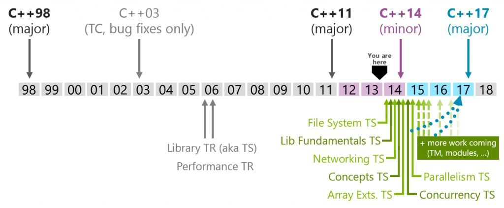

|
Markus Lindqvist 19.3.2014 Tekla |
markus.lindqvist@tekla.com |
|
 |
for(vector<int>::iterator it = Container.begin(); it != Container.end(); ++it) {
Total += *it;
}
// Preferred, constant reference
for(const auto &Value : Container) {
Total += Value;
}
// Work on copy
for(auto Value : Container) {
Total += Value;
}
// Work on reference, modify in-place
for(auto &Value : Container) {
Value += 2.0;
}
enum Alert { green, yellow, orange, red }; // traditional enum
enum class Color { red, blue }; // scoped and strongly typed enum
// no export of enumerator names into enclosing scope
// no implicit conversion to int
enum class TrafficLight { red, yellow, green };
Alert a = 7; // error (as ever in C++)
Color c = 7; // error: no int->Color conversion
int a2 = red; // ok: Alert->int conversion
int a3 = Alert::red; // error in C++98; ok in C++11
int a4 = blue; // error: blue not in scope
int a5 = Color::blue; // error: not Color->int conversion
Color a6 = Color::blue; // ok
class A{
public:
A():
num1(0),
num2(0) {
init();
}
A(int i):
num1(i),
num2(0) {
init();
}
A(int i, int j):
num1(i),
num2(j) {
init();
}
private:
int num1;
int num2;
int average;
void init() { average = (num1+num2) / 2; };
};
|
class A{
public:
A():
A(0) { }
A(int i):
A(i, 0) { }
A(int i, int j) {
num1 = i;
num2 = j;
average = (num1+num2) / 2;
}
private:
int num1;
int num2;
int average;
};
Source |
struct A
{
virtual void foo() final; // A::foo is final
void bar() final; // Error: non-virtual function cannot be final
};
struct B final : A // struct B is final
{
void foo(); // Error: foo cannot be overridden as it's final in A
};
struct C : B // Error: B is final
{
};
struct A
{
virtual void foo();
void bar();
};
struct B : A
{
void foo() const override; // Error: B::foo does not override A::foo
// (signature mismatch)
void foo() override; // OK: B::foo overrides A::foo
void bar() override; // Error: B::bar is not virtual
};
// C++11 version of noncopyable
struct noncopyable
{
noncopyable() = default;
noncopyable(const noncopyable&) = delete;
noncopyable& operator=(const noncopyable&) = delete;
};
struct widget
{
widget() = default;
inline widget& operator = (const widget&);
};
inline widget& widget::operator=(const widget&) = default;
std::vector<std::string> Container1 = { "banana", "apple", "orange", "ananas" };
assert(std::all_of(Container1.begin(), Container1.end(),
[](std::string Value) { return Value != "pineapple"; }));
assert(std::any_of(Container1.begin(), Container1.end(),
[](std::string Value) { return Value == "orange"; }));
assert(std::none_of(Container1.begin(), Container1.end(),
[](std::string Value) { return Value == "pineapple"; }));
map<int,string>::iterator i = m.begin(); double const xlimit = config["xlimit"]; singleton& s = singleton::instance(); binder2nd< greater > x = bind2nd( greater(), 42 );
auto i = begin(m);
auto const xlimit = config["xlimit"];
auto& s = singleton::instance();
auto x = [](int i) { return i > 42; };
Source
/
#